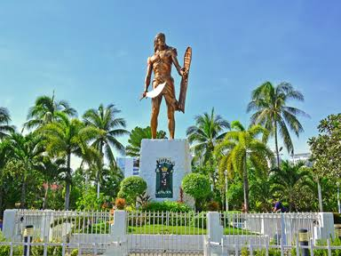

Cebu City, known as the "Queen City of the South," is the oldest city in the Philippines. It offers a unique mix of rich historical heritage, vibrant urban living, and easy access to tropical beaches.
Famous for hosting the colorful Sinulog Festival every year, Cebu City is also home to iconic historical landmarks such as Magellan's Cross and Fort San Pedro.
